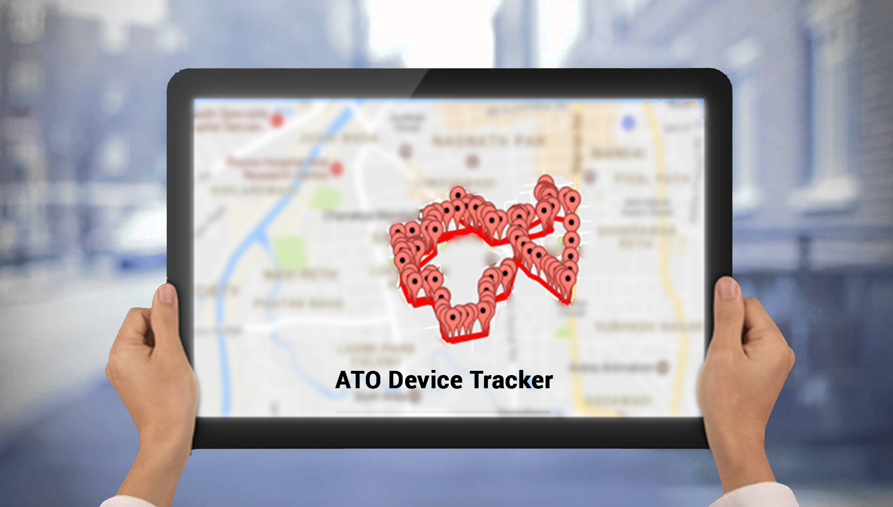

ATOデバイストラッカー




ATOデバイストラッカーは、学生、輸送中および旅行中の乗客の安全のためのインテリジェンスで設計されたGPS追跡システムです。 フリート管理にも役立ちます。トラッカーデバイスは通学バス、観光車両、自家用車に搭載でき、追跡はWebインターフェイスまたはAndroidアプリケーションを介して実行できます。
使い方 ？
- 車両に搭載されたGPSデバイスはGPS位置情報をクラウドに送信し、この情報は保存および処理されます。 情報に応じて、リアルタイムアラートが生成され、Webおよびandroidアプリケーションで送信されます
- ATOデバイストラッカーを使用すると、利用者はデバイスの場所に関するリアルタイムの情報を取得できます。また、利用者は車両のグループを同時に監視することもできます。 記録を維持するために、レポートのダウンロード機能も利用できます。
- 行程を定義することで、ジオゾーンのユーザーはWeb / Androidアプリでリアルタイムのアラートを受け取ることができます。 ATOは、同じデバイスを柔軟に制御することもできます。複数の利用者がさまざまな旅程、ジオゾーンで使用できます。
利点
- リアルタイムの位置追跡
- 緊急事態、旅、ジオゾーンのアラート
- 完全レスポンシブWebトラッキング
- Androidアプリケーションを介した追跡
- 個々のデバイスおよびデバイスのグループの追跡
特徴
- クラウドに基づき ソフトウェアメンテナンスなし
- 完全レスポンシブWebシステム：携帯電話、タブレット、ラップトップで使用できます
- 1回のGPSデバイスのインストール
- 安全で使いやすい。
事例紹介
- 保護者が通学途中で子供を追跡するのを助けました
- 通学バスが近づくと、保護者は警告を受け取りますli>
- 通学バス輸送会社は旅を監視することができます
応用分野
- 通学バスの追跡
- 個人の車両追跡
- 観光、輸送会社のための船隊追跡
- 企業の輸送追跡